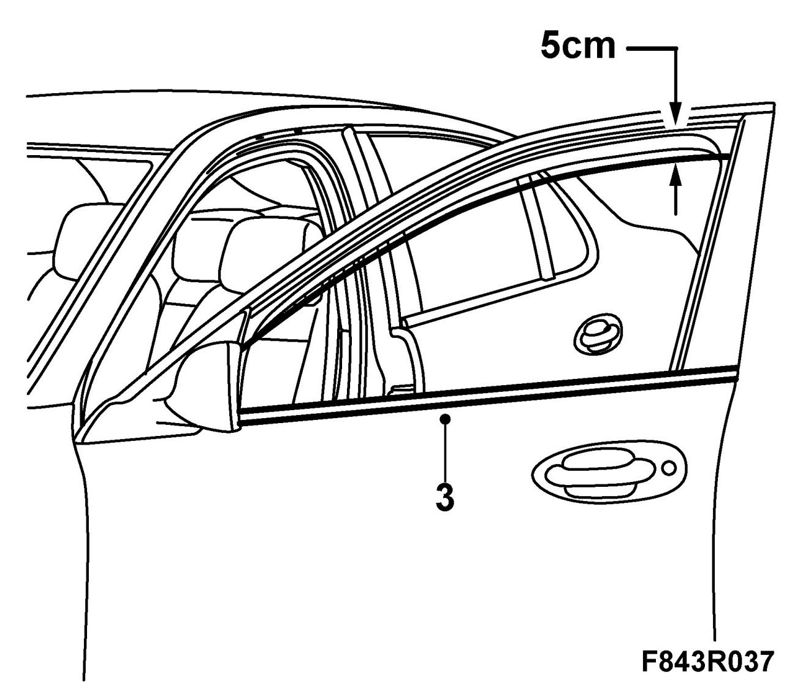
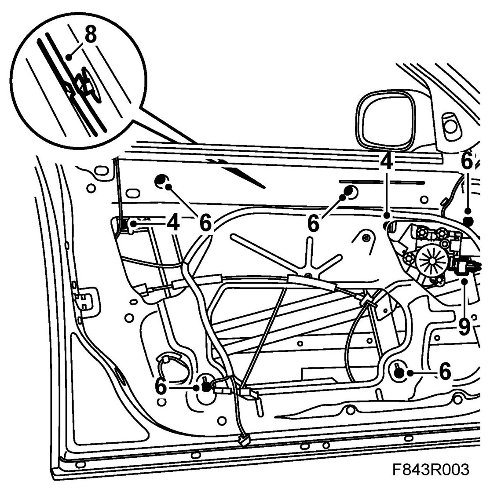
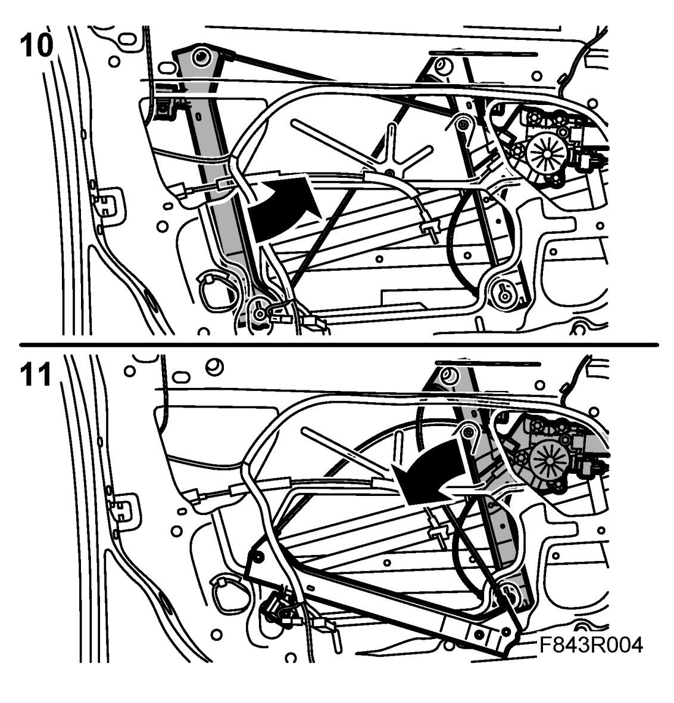
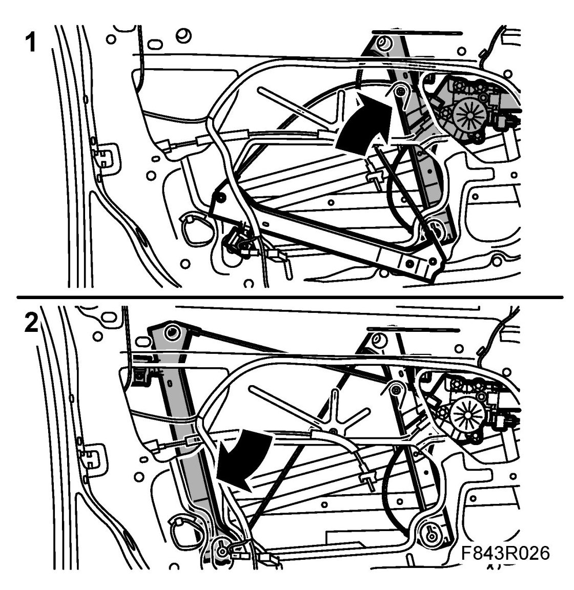
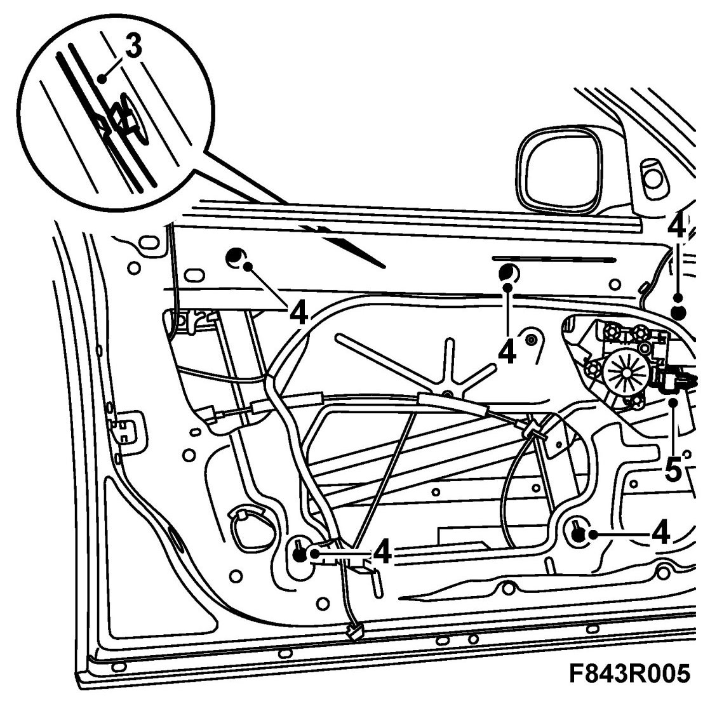
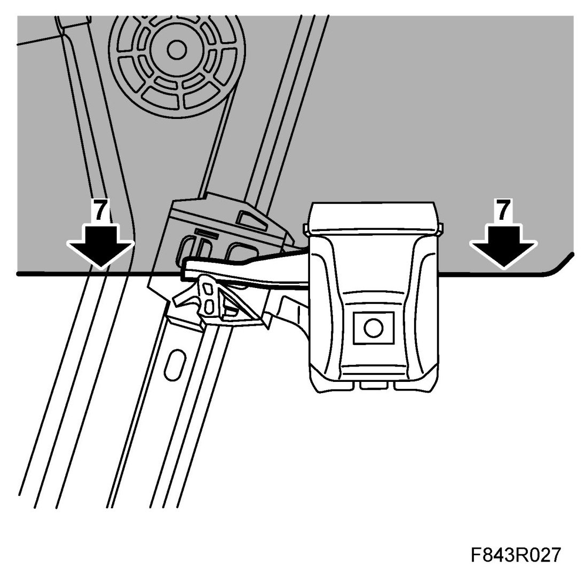
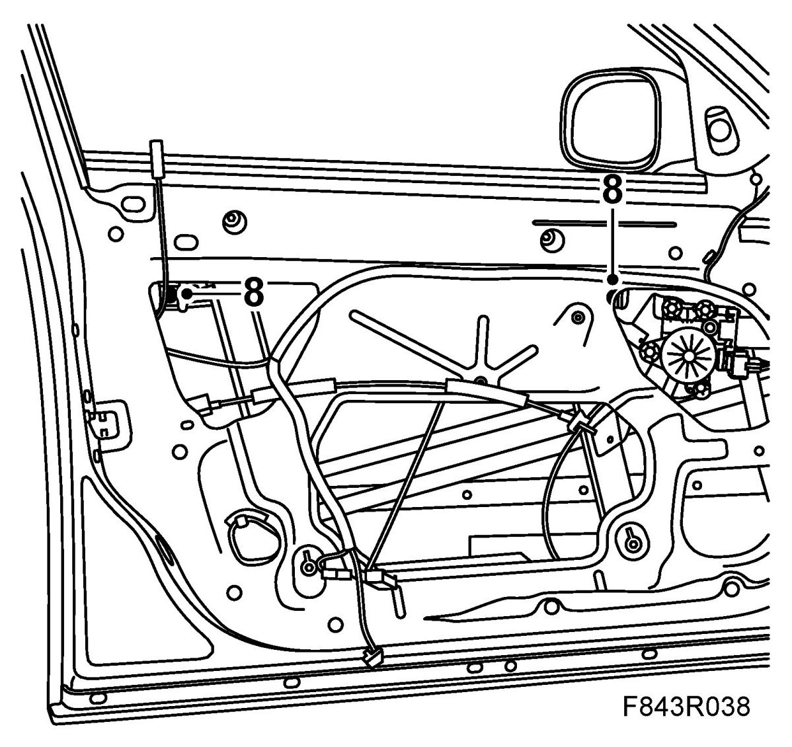

Window Lift, Front
Window Lift, Front
To remove
1. Open the window about 5 cm.

2. Remove Door trim, front, 4D and fold down the water barrier.
3. Remove the outer weatherstrip for the window. Lift the rear end using the removal tool.
Pull out the moulding from the base of the door mirror.
4. Slacken the bolts to release the window.

5. Lift the rear end of the window. Hold it at an angle and lift it up.
6. Remove the nuts and bolt securing the window lift.
7. Press out the window lift so that the studs come free of the mounting holes.
8. Remove the upper lift cable from the clip.
9. Unplug the motor.
10. Angle out the rear guide channel through the hole.

11. Continue with the front guide channel and motor.
To fit
1. Make sure the rubberised mountings for the window lift are in place.
Angle in the motor first and insert the studs into the mounting holes.

2. Continue with the other section and insert the studs into the mounting holes.
3. Fit the upper lift cable to the clip.

4. Fit the nuts and bolt. Fit the upper ones first.
5. Plug in the connector.
6. Fit the front of the window into the U-moulding. Hold the rear edge at an angle so that it locates in the U-moulding. Make sure the window is located properly in the U-moulding by closing and opening the window.
7. Press down the window so that it rests against the rubberised window mountings (illustration viewed from outside).

8. Tighten the bolts securing the window.

9. Fit the outer weatherstrip.
10. Plug in the window lift connector to the door trim. Close and open the window a few times to check its operation.
11. Fit the water barrier and Door trim, front, 4D.
12. Cars with pinch protection: Perform Calibration of pinch protection.
13. Clean the window.